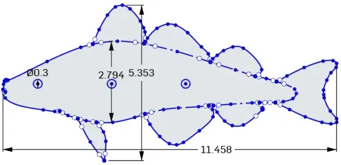
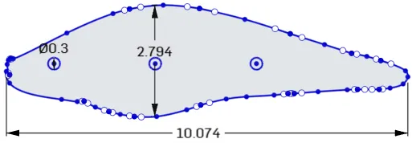
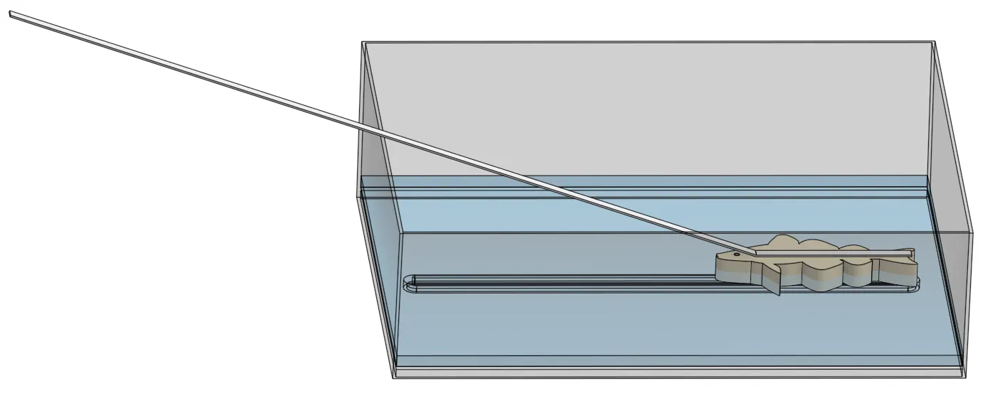
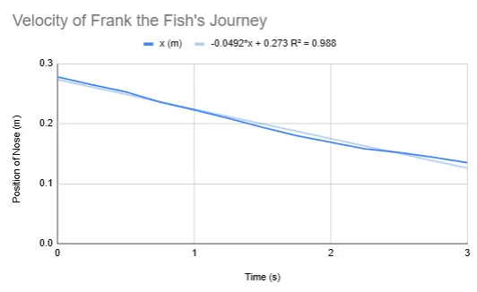
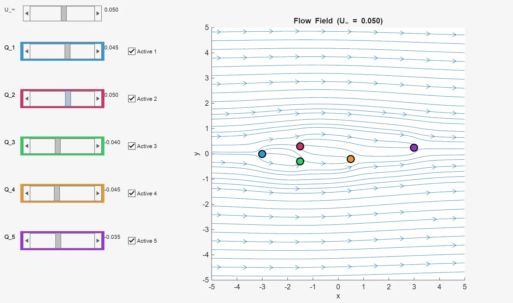
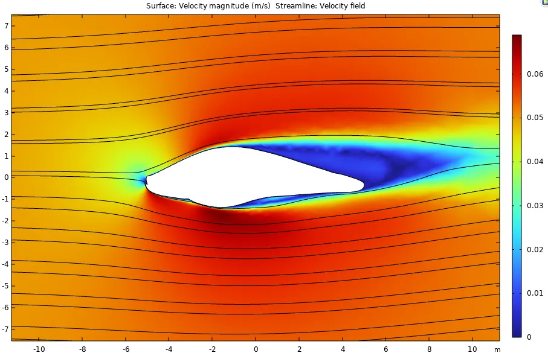
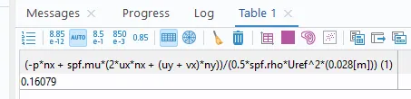
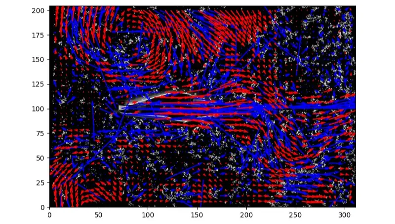
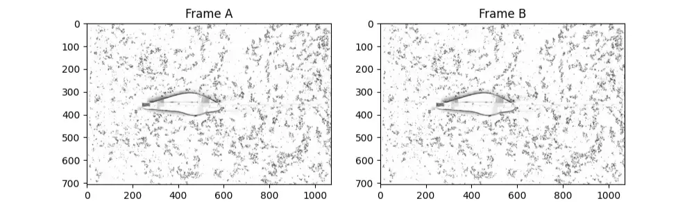

Midterm 2: Flow Around Finn the Fish

Shape and Setup
As was mentioned in my Lab 3 description, after Chris had spoken so passionately about fish eye positions, I was inspired to use the outline of one for the fluid flow analysis. The specific fish chosen was an Atlantic Cod of the free stock image outline variety. I named him Finn.
I traced Finn using the spline tool within the Sketch menu attempting to stay as true to the sketch as possible.

Finn was copied to create a secondary fish named Frank who promptly had all of his less than streamlined fins removed.

Frank was imported as a DXF into COMSOL and a these are the plots of the constant 0.0532 m/s flow around him.
How 0.05 m/s was found
Finn was pulled through the water via a tape measure duct taped to his body. It looked like this:

A top view slow motion video (FPS = 119.5) was taken of his motion and using the Apple Photos app, the frames at 0.25 second increments along his approximately 3 second journey were analyzed using point on the tape measure that overlapped the edge of the container to determine his position at that time step. Here is what it looked like at 0.75 seconds
This analysis allowed for the creation of this table and this plot:
| Time (s) | 0.00 | 0.25 | 0.50 | 0.75 | 1.00 | 1.25 | 1.50 | 1.75 | 2.00 | 2.25 | 2.50 | 2.75 | 3.00 |
| Position (m) | 0.278 | 0.265 | 0.253 | 0.236 | 0.223 | 0.209 | 0.194 | 0.180 | 0.169 | 0.158 | 0.152 | 0.144 | 0.135 |

A line of best fit was created using Excel’s built in LSRL (lease squares regression line) function which had a slope of 0.0492 m/s with , which is an very good fit given that the bounds are . There is obviously some deviation from that slope across the time steps so stating that there is constant velocity is decent simplifying assumption, but definitely not truly accurate. Given this innate inaccuracy and the fact that each measurement was an estimation of position (with a margin of error of about a 0.25 cm), the speed was rounded to 0.5 m/s.
Dimensional Analysis
Dimensional Analysis
| Variable | Parameter | Units | Dimensions |
| Characteristic Length | |||
| Frontal Area | |||
| Freestream velocity | |||
| Fluid Density | |||
| Dynamic Viscosity | |||
| Drag Force |
These are some rather important words Using the Buckingham Pi method: 6 parameters - 3 dimensions = 3 -groups.
Since this must be unitless,
- and so
- Let and
As such which is a factor off from the formula for .
Since this must be unitless,
- and so
- Let and
As such which is equivalent to inverse of the equation for
Since this must be unitless,
- and so
- Let
As such
Using these in tandem,
which makes sense because we know that the Reynold’s number has a really strong affect on the drag coefficient. That’s why the vs graphs are so helpful as a starting point for simple approximations. Additionally, having a shape factor like as a factor also makes sense because of how different drag is on bodies with different frontal areas when compared to their overall lengths. For instance a vertical plate opposing a horizontal flow creates incredibly high drag whereas that same plate in the same flow creates next to no drag if oriented horizontally.
Using rough calculations for the Reynold’s number gives
Treating Frank like a flat plate, the Reynold’s number vs drag coefficient plots give . Frank is obviously more than just a flat plate, so accounting for his shape where he is more than 3x longer than he is tall, the value becomes .
Potential Flow
Analysis using MATLAB

Using the potential flow model, the drag coefficient can be approximated as the average Q value across the sources/sinks divided by the velocity of the flow and the largest length between the streams in the direction of the flow. This gives:
Although this is only a very rough approximation, its not completely out of a question. Especially for shape so similar to airfoil such as Frank here which usually have drag coefficients from 0.05 to 0.1 depending on their shape and angle of attack. Although the the locations of the sources/sinks is based directly on the distances between the parts on Frank’s body as well and as the wake that his movement creates , their specific values were found heuristically using an iterative process to emulate the streamlines around his body. That is not to say they are completely inaccurate though, the streamlines in front of his nose split up and down, hugging the top and bottom of his body, then return back together to the normal freestream shape after his tail. Additionally, the effect on the streamlines far away from where Frank is located are negligibly affect. In reality, they return to a freestream a little bit more immediately after the end of the wake shadow but this was as close as I could get to the affect using the current setup.
MATLAB code
function potential_flow_gui
% POTENTIAL_FLOW_GUI
% Interactive visualization of potential flow with 4 sources/sinks.
% --- Parameters ---
U_inf = 0.5; % Free-stream velocity (will be adjustable)
x = linspace(-5, 5, 200);
y = linspace(-5, 5, 200);
[X, Y] = meshgrid(x, y);
% Source/sink locations
xs = [-2, 1, 1, 5]/2;
ys = [0, 1.5, -1.5, 1]/5;
% Initialize strengths
Q = [1.5, 2.5, -2, -2]/2.5;
active = [1, 1, 1, 1];
% --- Figure Setup ---
f = figure('Name', 'Potential Flow: Sources and Sinks', ...
'Position', [100, 100, 1200, 600]);
% Axes for flow plot
ax = axes('Parent', f, 'Position', [0.3 0.1 0.65 0.8]);
hold(ax, 'on');
axis(ax, 'equal');
axis(ax, [-5 5 -5 5]);
xlabel(ax, 'x'); ylabel(ax, 'y');
title(ax, 'Streamlines of Potential Flow');
% Define colors for each source/sink
colors = [
0.2, 0.6, 0.8; % Blue for source/sink 1
0.8, 0.2, 0.4; % Red for source/sink 2
0.2, 0.8, 0.4; % Green for source/sink 3
0.9, 0.6, 0.2 % Orange for source/sink 4
];
% --- Plot initial flow ---
hStream = plotFlow();
% --- UI controls ---
% Store handles to value labels
valueLabels = gobjects(4, 1);
% Freestream velocity slider
uicontrol('Style', 'slider', 'Min', -1, 'Max', 1, 'Value', U_inf, ...
'Units', 'normalized', 'Position', [0.05, 0.92, 0.15, 0.05], ...
'Callback', @(src,~) updateUinf(src.Value));
% Freestream label
uicontrol('Style', 'text', 'String', 'U_∞', ...
'Units', 'normalized', 'Position', [0.01, 0.92, 0.03, 0.05]);
% Freestream value label
uinfLabel = uicontrol('Style', 'text', ...
'String', sprintf('%.1f', U_inf), ...
'Units', 'normalized', ...
'Position', [0.205, 0.92, 0.04, 0.05], ...
'HorizontalAlignment', 'left');
for i = 1:4
% Slider for strength with colored background
sliderBg = uicontrol('Style', 'text', ...
'Units', 'normalized', ...
'Position', [0.045, 0.795 - (i-1)*0.15, 0.16, 0.06], ...
'BackgroundColor', colors(i, :));
uicontrol('Style', 'slider', 'Min', -5, 'Max', 5, 'Value', Q(i), ...
'Units', 'normalized', 'Position', [0.05, 0.8 - (i-1)*0.15, 0.15, 0.05], ...
'Callback', @(src,~) updateQ(i, src.Value));
% Label with colored background
uicontrol('Style', 'text', 'String', sprintf('Q_%d', i), ...
'Units', 'normalized', 'Position', [0.01, 0.8 - (i-1)*0.15, 0.03, 0.05], ...
'FontWeight', 'bold');
% Value label (shows current slider value)
valueLabels(i) = uicontrol('Style', 'text', ...
'String', sprintf('%.1f', Q(i)), ...
'Units', 'normalized', ...
'Position', [0.205, 0.8 - (i-1)*0.15, 0.04, 0.05], ...
'HorizontalAlignment', 'left');
% Checkbox to toggle on/off
uicontrol('Style', 'checkbox', 'Value', active(i), ...
'String', sprintf('Active %d', i), ...
'Units', 'normalized', 'Position', [0.25, 0.8 - (i-1)*0.15, 0.08, 0.05], ...
'Callback', @(src,~) toggleActive(i, src.Value));
end
% --- Nested update functions ---
function updateUinf(val)
U_inf = val;
% Update the value label
set(uinfLabel, 'String', sprintf('%.1f', val));
refreshPlot();
end
function updateQ(i, val)
Q(i) = val;
% Update the value label
set(valueLabels(i), 'String', sprintf('%.1f', val));
refreshPlot();
end
function toggleActive(i, val)
active(i) = val;
refreshPlot();
end
function refreshPlot()
if isvalid(hStream)
delete(hStream)
end
hStream = plotFlow();
end
function h = plotFlow()
% Compute potential and stream function
Phi = U_inf * X;
Psi = U_inf * Y;
% Compute velocities
u = U_inf * ones(size(X));
v = zeros(size(Y));
for j = 1:4
if active(j)
r2 = (X - xs(j)).^2 + (Y - ys(j)).^2;
u = u + Q(j)/(2*pi) * (X - xs(j)) ./ r2;
v = v + Q(j)/(2*pi) * (Y - ys(j)) ./ r2;
theta = atan2(Y - ys(j), X - xs(j));
Psi = Psi + Q(j)/(2*pi) * theta;
end
end
cla(ax)
h = streamslice(ax, X, Y, u, v, 2);
hold on
% Plot each node with its corresponding color
for j = 1:4
if active(j)
plot(ax, xs(j), ys(j), 'o', 'MarkerSize', 10, ...
'MarkerFaceColor', colors(j, :), ...
'MarkerEdgeColor', 'k', 'LineWidth', 1.5);
end
end
title(ax, sprintf('Flow Field (U_∞ = %.1f)', U_inf));
axis(ax, [-5 5 -5 5]);
drawnow;
end
end
COMSOL Simulation
COMSOL Simulation and Analysis
Here Frank is having a very fun time swimming at

COMSOL found the drag coefficient to be 0.16

- Plugging this in to the equation for the force of drag, this gives:
- The equation used was (-pnx + spf.mu(2uxnx + (uy + vx)ny))/(0.5spf.rho*Uref^2*(0.028[m]))
- Written in slightly more legible terms it says this
- Given that Frank’s relative velocity and his width .
Generally, drag coefficient is written in terms of the drag force, like this:
But we don’t know the total drag force either, so we have to build it up from its components:
- Pressure drag (also called “form drag” — I’m not really sure what you prefer, so I’m going to use both names) Also, that was an entirely human placed em-dash.
- Viscous drag (also called skin drag, but that name makes me uncomfortable, so even though I our textbook uses it, I won’t be doing so)
Pressure Drag Component
This component is rather simple, it’s just the pressure acting on the boundary at that given position multiplied by the x-component the vector normal to the surface. It’s negative because drag acts in opposition to the movement
Viscous Drag Component
This component is more complicated is the product of the dynamic viscosity and the sum of the velocity gradients multiplied by their respective normal vectors and . This is pulled directly from the formula for shear stress acting along a surface in a fluid
multiplied by the surface normals to give .
This value of makes sense because well made airfoils usually have one of around 0.1 and Frank is shaped like a slightly lumpy version of an airfoil.
Python Code
from openpiv import tools, validation, filters, scaling, pyprocess
import numpy as np
import matplotlib.pyplot as plt
basePath = 'C:\\Users\\tgiglia\\Downloads\\'
# print("------------------basePath here-------------"+basePath)
frame_a = tools.imread('C:/Users/tgiglia/Downloads/frame_0_02_28f.jpeg')
frame_b = tools.imread('C:/Users/tgiglia/Downloads/frame_0_03_0f.jpeg')
fig, ax = plt.subplots(1, 2, figsize=(10, 8))
ax[0].imshow(frame_a, cmap=plt.cm.gray)
ax[1].imshow(frame_b, cmap=plt.cm.gray)
# Add titles to make it clearer
ax[0].set_title('Frame A')
ax[1].set_title('Frame B')
winsize = 28 # pixels, interrogation window size in frame A
searchsize = 34 # pixels, search area size in frame B
overlap = 15 # pixels, 50% overlap
dt = 2*0.0084068937 # sec = 1/118.95 fps, time interval between the two frames
u0, v0, sig2noise = pyprocess.extended_search_area_piv(
frame_a.astype(np.int32),
frame_b.astype(np.int32),
window_size=winsize,
overlap=overlap,
dt=dt,
search_area_size=searchsize,
sig2noise_method='peak2peak',
)
x, y = pyprocess.get_coordinates(
image_size=frame_a.shape,
search_area_size=searchsize,
overlap=overlap,
)
invalid_mask = validation.sig2noise_val(
sig2noise,
threshold = 1.02,
)
u2, v2 = filters.replace_outliers(
u0, v0,
invalid_mask,
method='localmean',
max_iter=3,
kernel_size=3,
)
# convert x,y to mm
# convert u,v to mm/sec
x, y, u3, v3 = scaling.uniform(
x, y, u2, v2,
scaling_factor = 3.42519685039, # pixels/millimeter
)
# 0,0 shall be bottom left, positive rotation rate is counterclockwise
x, y, u3, v3 = tools.transform_coordinates(x, y, u3, v3)
tools.save(basePath+'/exp1_001.txt' , x, y, u3, v3, invalid_mask)
fig, ax = plt.subplots(figsize=(8,8))
tools.display_vector_field(
basePath+'/exp1_001.txt',
ax=ax, scaling_factor=3.42519685039,
scale=250, # scale defines here the arrow length
width=0.0035, # width is the thickness of the arrow
on_img=True, # overlay on the image
image_name='C:/Users/tgiglia/Downloads/frame_0_02_28f.jpeg'
)
try:
plt.show()
except:
pass
Comparison with PIV
Redoing the PIV

I redid the PIV on Frank here to see if I could get a better result and despite the chaos of all of the red (low confidence) arrows, I’m actually decently happy with this result (compared to the old one anyways).
My process:
- I started with the slow motion video of Frank being pulled through the water filled with pepper flakes. I knew from the first go at this that overdoing it on the pepper flakes was no where near as disruptive to the final result as underdoing it. As such, I put 10 packages in there. This did have the unintended affect of the flakes clumping a little bit more, but they did that anyways in the previous attempt.
- A small portion of the slow motion video (about 1 second of real time) where the flow seemed representative of the whole for the experiment was selected.
- The specific frame rate of 118.95 was found in the metadata section for the video.
- The video was then cropped to only show the container and edited (maxing out exposure, highlights, and contrast) and setting it to grayscale to make it as easy as possible for the PIV to distinguish between the pepper flakes on the top of the water and the other aspects of the video (like their shadows and refractions from my kitchen light on the water). It looked liked this:

- This video was then imported into the Mixilab to extract and download frames.
- It was also imported into RapidTables pixel measurement tool to get the scale of the video. 5 cm = 50 mm ended up being 169 pixels which translates to 3.43 pixels per mm.
- If solely the blue (high confidence) arrows are focused on, the freestreams along the boundary layer can be viewed.
- Additionally there is a lack of arrows behind Frank which is an effect of both the wake that he is creating while he moves, but also the startup vortices that pull water into the swirls your can see in the top left corner.
- As an additional note, the long blue lines in front of the nose can be ignored because they are simply the PIV picking up on the tape measure used to pull Frank moving.
- I worked with adjusting the threshold value (this has 1.02), but found that the difference between a chaotic mess of red and non-sensical blue arrows was a pretty small one. (0.9 and 1.1 were completely unintelligible)
- I also tried using upwards of a 4 time step gap between the two frames (about 1/30th of second) to see if that made a positive difference. If found that a 2 frame gap worked best for me. 1/120th of a second didn’t show enough motion and 1/30th was way too much.
- Region size was also adjusted to increase the resolution (number) of boxes until each of the simulations were almost equivalent. This uses 15 pixel regions which at 3.48 pixels per mm is about 4.3mm.
Conclusion
All in all, I think that the learning curve for getting PIV to work well was a little too steep for me for this lab. Especially considering my comparative lack of experience using it compared to COMSOL (another rather finicky software) made it a worse option. Additionally, even though it was mostly a heuristic approach, I think that the intuitive nature of using sources and sinks in the MATLAB program worked better for generating an understanding of what was actually happening in the fluid.
Comparison
- Dimensional Analysis estimated which was a pretty quick process after I found the chart comparing and for different shapes.
- The Flow Visualization in MATLAB estimated and although it was a lot longer of a process, I’m not sure I trust it a ton more because I was mostly trying to match vague shapes in water with vague shapes on a screen.
- COMSOL estimated the value to be . All in all I trust this data the most because I was able to use the exact shape of the model (via DXF import), a known consistent freestream flow speed and calculate the precise values of viscous and form drag given those parameters in a repeatable manner without having to make simplifying assumptions that might alter the result.
- The PIV was a fun new tool to try out and allowed for the visualizations of what smaller streamline changes might be occurring, but with all of the messy attributes of real world data including start-up vortices, residual movement of the water from when the body was placed in it and displaced some water, and shadows, it makes the data seem relatively unreliable.
- For all of the methods that returned numbers, they are all similar and are in the same realm of plausibility given Frank’s slightly lumpy airfoil shape which would imply that his drag coefficient would be slightly higher than that of a well made one for the medium, speed, and angle of attack they are designed for.
Reflections:
- What I learned
Through the research into how to create the expression for the line integral around the boundary, I now have a much better grasp of how drag is created and how the specific components of the body and its surrounding environment interact.
I also learned over the course of completing this (as well as 7 other projects & assignments) on Monday 10/27 though Wednesday 11/5 that my sleep schedule is a lot more flexible than I had previously thought. The powers of stress and caffeine are truly remarkable.
- What we were most proud of
- I took two entire months of the semester, but I now finally feel like I understand what I’m doing in COMSOL and how best to find what I am trying to use.
- Also I still think pulling the shapes with a tape measure was a very clever solution in a household that does not have any string or rulers.
- What took a while (was tough)
- I still don’t really understand how to adjust the parameters in PIV to get the results that I am looking for, but otherwise this went pretty well. I will admit that both it and the MATLAB flow visualization were a lot of trial and error to get the overall streamlines to look similar to the actual flow.
- Most spectacular failure
- I was working on my MATLAB and COMSOL simulations late at night in the EPDC (through to 12:00AM, when they close), presuming that if I saved the files to the computer that I could simply return to that desktop the next morning to finish the work. I ended up learning the hard way that the drives clear overnight for all of the Tufts desktops and I had to redo all of the work related to those.
Originally written in Notion.